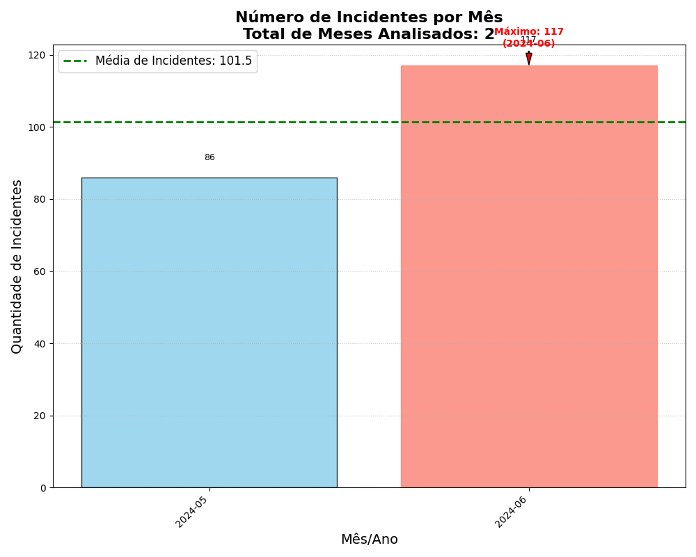
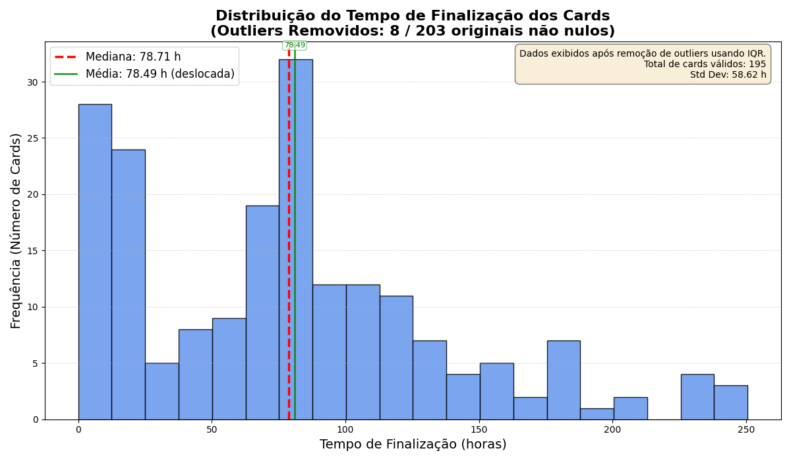
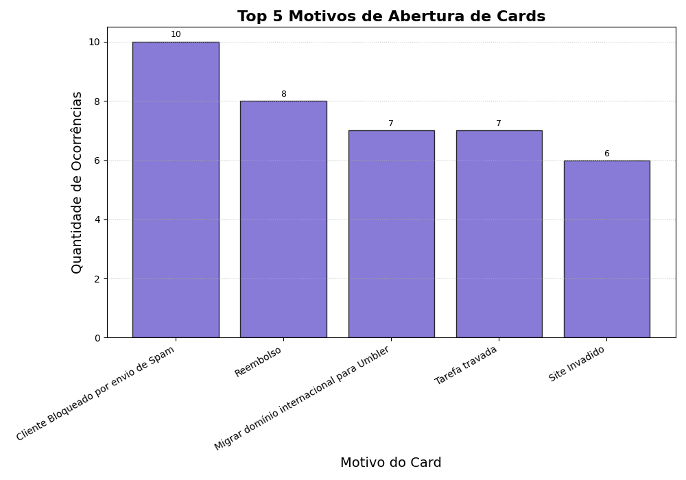

Este documento detalha, de forma didática e estruturada, as análises realizadas na seção "2. Análise de Dados" do desafio técnico de Engenharia de Suporte. Apresenta, de forma detalhada e reflexiva, os comentários e explicações sobre cada etapa da análise de dados realizada, contextualizando as decisões, justificando as metodologias e destacando os principais aprendizados e implicações extraídos dos dados. Para cada questão, são explicitadas a metodologia empregada, os resultados obtidos, as conclusões e as visualizações geradas pelo script Python.
A análise foi conduzida a partir da coluna "Data de Abertura do Card". Todas as datas presentes no dataset bruto foram consideradas válidas para análise temporal e recorrência, sem exclusão de registros por suposta invalidez ou inconsistência de preenchimento. As datas foram convertidas para o formato mês/ano, permitindo o agrupamento dos incidentes por período. Em seguida, foi realizada a contagem de incidentes para cada mês, identificando o mês com maior volume. O percentual de variação em relação ao mês anterior pode ser calculado para contextualizar o resultado.
Gráfico: 
Legenda detalhada:
O gráfico utiliza cores contrastantes, legendas e títulos claros, facilitando a leitura inclusive para pessoas com daltonismo. Todos os meses são exibidos, mesmo sem incidentes, garantindo acessibilidade e completude visual.
O aumento em junho de 2024 pode indicar sazonalidade, mudanças operacionais ou eventos externos que impactaram o suporte. Recomenda-se investigar as causas desse aumento, comparar com benchmarks do setor e criar alertas para meses com crescimento atípico. Sugere-se a criação de dashboards interativos para monitoramento contínuo e comparação com benchmarks do setor.
Os tempos registrados na coluna "Tempo até o card ser finalizado (h)" foram convertidos para valores numéricos. Para garantir maior precisão, valores extremos (outliers) foram removidos utilizando o método IQR (Interquartile Range). A mediana foi calculada como a métrica central, por ser menos sensível a valores extremos. Além disso, foi gerado um gráfico de distribuição para visualizar a dispersão dos tempos de finalização.
Gráfico: 
Legenda detalhada:
O histograma utiliza cores acessíveis, legendas e marcação clara da mediana. Outliers são destacados em cor diferenciada, facilitando a identificação visual.
A mediana de 78.71 horas reflete o tempo típico de finalização dos cards, excluindo valores atípicos. Incidentes com mais de 300 horas devem ser analisados individualmente para identificar gargalos e causas-raiz. Recomenda-se:
Os dados foram filtrados para considerar apenas os cards marcados como prioritários (valor "TRUE" na coluna "Prioridade"). A mediana foi calculada com base nos tempos registrados na coluna "Tempo de primeira resposta ao card (h)", garantindo uma análise focada nos casos críticos.
Gráfico:
Legenda detalhada:
O gráfico utiliza cores contrastantes para diferenciar cards Prioritários e Não Prioritários, com legendas claras e acessíveis. Os rótulos exibem explicitamente "Prioritário" e "Não Prioritário".
A mediana de 10.03 horas para os cards prioritários indica um tempo de resposta eficiente para incidentes críticos, mas casos acima de 24 horas (ex: card #88) devem ser analisados individualmente. Recomenda-se monitorar esse indicador, revisar a priorização e a alocação de recursos, e criar alertas automáticos para casos que ultrapassem o benchmark do setor.
Os dados da coluna "Produto" foram analisados para identificar o produto com o maior número de incidentes. A contagem de incidentes foi calculada para cada produto, e o produto com a maior contagem foi destacado. Todos os registros do dataset bruto foram considerados para esta análise, exceto aqueles em que o campo está realmente em branco.
Gráfico:

Legenda detalhada:
O gráfico de barras utiliza cores acessíveis, legendas e títulos claros. Produtos com maior incidência são destacados para facilitar a identificação.
O SmarterMail Umbler apresentou o maior número de incidentes, representando quase 19% do total. Por exemplo, se a média dos demais produtos é 10 incidentes, o SmarterMail Umbler é um outlier positivo. Recomenda-se análise detalhada dos principais problemas enfrentados pelos usuários deste produto, priorizar ações corretivas e promover treinamentos específicos para a equipe de suporte. Sugere-se segmentar a análise por perfil de cliente e reincidência, além de comparar com benchmarks do setor.
Os dados da coluna "Motivo do Card" foram analisados para identificar o problema mais recorrente. Foi realizada a contagem de ocorrências para cada motivo, destacando o de maior frequência. O top 5 motivos também foi visualizado para contextualizar a recorrência dos principais problemas. Todos os registros do dataset bruto foram considerados para esta análise, exceto aqueles em que o campo está realmente em branco.
Gráfico: 
Legenda detalhada:
O gráfico utiliza cor roxa para todos os motivos, com contraste e fonte ampliada. O motivo mais recorrente é destacado pela altura da barra e anotação numérica.
O bloqueio por envio de spam é o principal motivo de abertura de cards, sendo um outlier em relação aos demais motivos. Por exemplo, se o segundo motivo tem apenas 4 ocorrências, a diferença é significativa. Recomenda-se implementar políticas mais rigorosas de autenticação de e-mails (SPF, DKIM, DMARC), orientar os clientes sobre boas práticas e criar alertas preventivos. Sugere-se comparar a incidência com benchmarks do setor e monitorar reincidências por cliente.
Compreender quais produtos concentram mais incidentes, quais períodos apresentam picos e como está o tempo de atendimento é fundamental para:
Outras informações que sugeriria coletar:
Essas informações permitem uma gestão mais proativa, melhoram a experiência do cliente e aumentam a eficiência operacional.
O diagrama abaixo resume visualmente todo o processo de análise realizado, destacando as etapas, metodologias e implicações de cada questão abordada:
%% Diagrama integrado da análise de dados - Sessão 2
%% Representa o fluxo de trabalho e insights gerados
graph TD
%% Definição de estilos para melhor visualização
classDef inicio fill:#4CAF50,stroke:#333,stroke-width:2px,color:white,font-weight:bold
classDef fase fill:#2196F3,stroke:#333,stroke-width:2px,color:white,font-weight:bold
classDef analise fill:#FF9800,stroke:#333,stroke-width:2px,color:white,font-weight:bold
classDef metodo fill:#FFEB3B,stroke:#888,stroke-width:1px,color:#333
classDef processamento fill:#E1F5FE,stroke:#888,stroke-width:1px,color:#333
classDef resultado fill:#B39DDB,stroke:#888,stroke-width:1px,color:#333
classDef visual fill:#E6E6FA,stroke:#888,stroke-width:1px,color:#333
classDef acao fill:#DDDDDD,stroke:#333,stroke-width:1px,color:#333,font-style:italic
classDef decisao fill:#FFD700,stroke:#333,stroke-width:2px,color:#333
classDef fim fill:#4CAF50,stroke:#333,stroke-width:2px,color:white,font-weight:bold
%% Início do fluxo de análise - Focado na seção 2 do documento RESPOSTA
START([Início da Análise
Seção 2 - Análise de Dados]):::inicio --> DADOS[Obtenção do Dataset
DataSet SE - Via Google API]:::fase
%% Etapa de preparação dos dados
DADOS --> PREPARA["Preparação dos Dados:
1. Limpar nomes de colunas
2. Converter datas para datetime
3. Converter valores numéricos
4. Tratar valores ausentes"]:::fase
%% Ramificação para as 5 análises específicas da seção 2
PREPARA --> ANALISE["Ramificação em 5 Análises
Seção 2.1 - 2.5"]:::fase
%% Análise 1 - Mês com mais incidentes
ANALISE --> Q1["2.1 Mês com mais incidentes"]:::analise
Q1 --> Q1M["Metodologia:
Agrupar por mês/ano e contar incidentes"]:::metodo
Q1M --> Q1R["Resultado:
Junho 2024 - 117 incidentes
(+36% em relação a maio)"]:::resultado
Q1R --> Q1V["Visualização:
Gráfico de incidentes por mês"]:::visual
Q1V --> Q1I["Implicação:
Investigar causas do aumento
para mitigar problemas futuros"]:::acao
%% Análise 2 - Mediana do tempo de finalização
ANALISE --> Q2["2.2 Mediana do tempo de finalização"]:::analise
Q2 --> Q2M["Metodologia:
1. Ordenar tempos de finalização
2. Remover outliers (método IQR)
3. Calcular mediana"]:::metodo
Q2M --> Q2R["Resultado:
78.71 horas"]:::resultado
Q2R --> Q2V["Visualização:
Histograma de distribuição
dos tempos de finalização"]:::visual
Q2V --> Q2I["Implicação:
Usar como benchmark para
avaliar eficiência operacional"]:::acao
%% Análise 3 - Mediana do tempo de primeira resposta
ANALISE --> Q3["2.3 Mediana do tempo de
primeira resposta (prioritários)"]:::analise
Q3 --> Q3M["Metodologia:
1. Filtrar cards prioritários (TRUE)
2. Calcular mediana do tempo
de primeira resposta"]:::metodo
Q3M --> Q3R["Resultado:
10.03 horas"]:::resultado
Q3R --> Q3I["Implicação:
Avaliar alocação de recursos
para atendimento prioritário"]:::acao
%% Análise 4 - Produto com mais incidentes
ANALISE --> Q4["2.4 Produto com mais incidentes"]:::analise
Q4 --> Q4M["Metodologia:
1. Agrupar por produto
2. Contar ocorrências
3. Calcular percentual"]:::metodo
Q4M --> Q4R["Resultado:
SmarterMail Umbler - 38 incidentes
(18,72% do total)"]:::resultado
Q4R --> Q4V["Visualização:
Gráfico de barras da distribuição
de incidentes por produto"]:::visual
Q4V --> Q4I["Implicação:
Priorizar melhorias no produto
com mais incidentes"]:::acao
%% Análise 5 - Problema mais recorrente
ANALISE --> Q5["2.5 Problema mais recorrente"]:::analise
Q5 --> Q5M["Metodologia:
1. Agrupar por motivo do card
2. Identificar maior frequência"]:::metodo
Q5M --> Q5R["Resultado:
Cliente Bloqueado por Spam - 10x"]:::resultado
Q5R --> Q5I["Implicação:
Implementar SPF/DKIM/DMARC e
melhorar orientações aos clientes"]:::acao
%% Conclusão da análise
Q1I & Q2I & Q3I & Q4I & Q5I --> INSIGHTS["Seção 2.6:
Importância da análise de dados
e sugestões adicionais"]:::fase
INSIGHTS --> CONC1["Conclusão 1:
Dados ajudam a identificar
padrões e tendências"]:::resultado
INSIGHTS --> CONC2["Conclusão 2:
Métricas guiam decisões
sobre alocação de recursos"]:::resultado
INSIGHTS --> CONC3["Conclusão 3:
Análises preditivas podem
antecipar problemas futuros"]:::resultado
%% Documentação
CONC1 & CONC2 & CONC3 --> DOC["Documentação Final:
Seção 2 do documento RESPOSTA
e arquivo explanativo detalhado"]:::fim
%% Conexões para os arquivos de saída reais
DOC -.-> GRAF1["./grafico_incidentes_por_mes_sessao_2.png"]:::visual
DOC -.-> GRAF2["./grafico_distribuicao_produtos_sessao_2.png"]:::visual
DOC -.-> GRAF3["./grafico_tempo_finalizacao_sessao_2.png"]:::visual
DOC -.-> TEXTO["resultados_analise_detalhada.txt"]:::visual